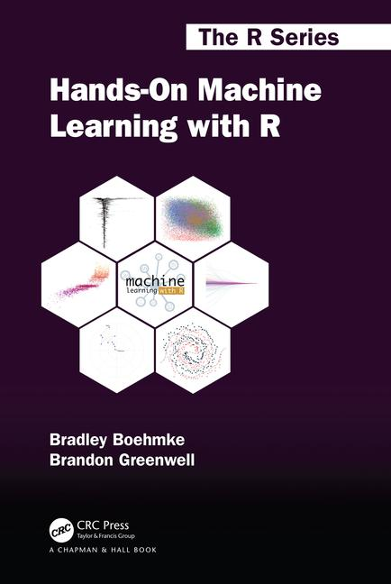

1 + 2
## [1] 3Hands-On Machine Learning with R, 2ed
Welcome

Welcome to the second edition of Hands-On Machine Learning with R. This book provides hands-on modules for many of the most common machine learning methods to include:
- Generalized low rank models
- Clustering algorithms
- Autoencoders
- Regularized models
- Random forests
- Gradient boosting machines
- Deep neural networks
- Stacking / super learners
- and more!
You will learn how to build and tune these various models with R packages that have been tested and approved due to their ability to scale well. However, our motivation in almost every case is to describe the techniques in a way that helps develop intuition for its strengths and weaknesses. For the most part, we minimize mathematical complexity when possible but also provide resources to get deeper into the details if desired.
This book is undergoing heavy restructuring and may be confusing or incomplete; however, we hope for the first draft to be completed by the fall of 2023. You can find the complete first edition at bradleyboehmke.github.io/HOML.
Who should read this
We intend this work to be a practitioner’s guide to the machine learning process and a place where one can come to learn about the approach and to gain intuition about the many commonly used, modern, and powerful methods accepted in the machine learning community. If you are familiar with the analytic methodologies, this book may still serve as a reference for how to work with the various R packages for implementation.
This book is not meant to be an introduction to R or to programming in general; as we assume the reader has familiarity with the R language to include defining functions, managing R objects, controlling the flow of a program, and other basic tasks. If not, we would refer you to R for Data Science (Wickham and Grolemund 2016) to learn the fundamentals of data science with R such as importing, cleaning, transforming, visualizing, and exploring your data. For those looking to advance their R programming skills and knowledge of the language, we would refer you to Advanced R (Wickham 2014). Nor is this book designed to be a deep dive into the theory and math underpinning machine learning algorithms. Several books already exist that do great justice in this arena (i.e. Elements of Statistical Learning (Hastie, Tibshirani, and Friedman 2009), Computer Age Statistical Inference (Efron and Hastie 2016), Deep Learning (Goodfellow, Bengio, and Courville 2016)).
Instead, this book is meant to help R users learn to use the machine learning stack within R, which includes using various R packages such as the tidymodels ecosystem of packages for model development, vip and pdp for model interpretation, TODO (add others as we develop) and others to effectively model and gain insight from your data. The book favors a hands-on approach, growing an intuitive understanding of machine learning through concrete examples and just a little bit of theory. While you can read this book without opening R, we highly recommend you experiment with the code examples provided throughout.
Why R
In this book we focus on implementing machine learning tasks with R. R has emerged over the last couple decades as a first-class tool for scientific computing tasks, and has been a consistent leader in implementing statistical methodologies for analyzing data. The usefulness of R for data science stems from the large, active, and growing ecosystem of third-party packages. We are not ignoring other languages such as Python or Julia because we think these tools are inferior. They’re not! And in practice, most organizations and data science teams use a mix of languages. In fact, throughout this book we may reference methods or implementations in other languages and we may even provide a few examples in Python. However, we strongly believe that it’s best to master one tool at a time, and R is a great place to start.
Conventions used in this book
The following typographical conventions are used in this book:
- strong italic: indicates new terms,
- bold: indicates package & file names,
inline code: monospaced highlighted text indicates functions or other commands that could be typed literally by the user,- code chunk: indicates commands or other text that could be typed literally by the user
In addition to the general text used throughout, you will notice the following code chunks with images:
Signifies a tip or suggestion
Signifies a general note
Signifies a warning or caution
Additional resources
There are many great resources available to learn about machine learning. Throughout the chapters we try to include many of the resources that we have found extremely useful for digging deeper into the methodology and applying with code. However, due to print restrictions, the hard copy version of this book limits the concepts and methods discussed. Online supplementary material exists at https://koalaverse.github.io/homlr/. The additional material will accumulate over time and include extended chapter material (i.e., random forest package benchmarking) along with brand new content we couldn’t fit in (i.e., random hyperparameter search). In addition, you can download the data used throughout the book, find teaching resources (i.e., slides and exercises), and more.
Acknowledgments
We’d like to thank everyone who contributed feedback, typo corrections, and discussions while the book was being written. GitHub contributors included \(@\)agailloty, \(@\)asimumba, \(@\)benprew, \(@\)bfgray3, \(@\)bragks, \(@\)cunningjames, \(@\)DesmondChoy, \(@\)erickeniuk, \(@\)j-ryanhart, \(@\)lcreteig, \(@\)liangwu82, \(@\)Lianta, \(@\)mccurcio, \(@\)mmelcher76, \(@\)MMonterosso89, \(@\)nsharkey, \(@\)raycblai, \(@\)schoonees, \(@\)tpristavec and \(@\)william3031. We’d also like to thank folks such as Alex Gutman, Greg Anderson, Jay Cunningham, Joe Keller, Mike Pane, Scott Crawford, and several other co-workers who provided great input around much of this machine learning content.
Software information
This book was built with the following packages and R version. All code was executed on 2019 MacBook Pro with a 2.6 GHz 6-Core Intel Core i7 processor, 16 GB of memory, 2667 MHz speed, and double data rate synchronous dynamic random access memory (DDR4).
# packages used
pkgs <- c(
"modeldata",
"tidymodels",
"vip"
)
# package & session info
sessioninfo::session_info(pkgs)
#> ─ Session info ───────────────────────────────────────────────────────────────
#> setting value
#> version R version 4.2.0 (2022-04-22)
#> os Ubuntu 22.04.3 LTS
#> system x86_64, linux-gnu
#> ui X11
#> language (EN)
#> collate C.UTF-8
#> ctype C.UTF-8
#> tz UTC
#> date 2024-01-10
#> pandoc 2.9.2.1 @ /usr/bin/ (via rmarkdown)
#>
#> ─ Packages ───────────────────────────────────────────────────────────────────
#> package * version date (UTC) lib source
#> backports 1.4.1 2021-12-13 [1] CRAN (R 4.2.0)
#> broom 1.0.5 2023-06-09 [1] CRAN (R 4.2.0)
#> cachem 1.0.8 2023-05-01 [1] CRAN (R 4.2.0)
#> class 7.3-20 2022-01-16 [3] CRAN (R 4.2.0)
#> cli 3.6.2 2023-12-11 [1] CRAN (R 4.2.0)
#> clock 0.7.0 2023-05-15 [1] CRAN (R 4.2.0)
#> codetools 0.2-18 2020-11-04 [3] CRAN (R 4.2.0)
#> colorspace 2.1-0 2023-01-23 [1] CRAN (R 4.2.0)
#> conflicted 1.2.0 2023-02-01 [1] CRAN (R 4.2.0)
#> cpp11 0.4.7 2023-12-02 [1] CRAN (R 4.2.0)
#> data.table 1.14.10 2023-12-08 [1] CRAN (R 4.2.0)
#> diagram 1.6.5 2020-09-30 [1] CRAN (R 4.2.0)
#> dials 1.2.0 2023-04-03 [1] CRAN (R 4.2.0)
#> DiceDesign 1.10 2023-12-07 [1] CRAN (R 4.2.0)
#> digest 0.6.33 2023-07-07 [1] CRAN (R 4.2.0)
#> dplyr 1.1.4 2023-11-17 [1] CRAN (R 4.2.0)
#> ellipsis 0.3.2 2021-04-29 [1] CRAN (R 4.2.0)
#> fansi 1.0.6 2023-12-08 [1] CRAN (R 4.2.0)
#> farver 2.1.1 2022-07-06 [1] CRAN (R 4.2.0)
#> fastmap 1.1.1 2023-02-24 [1] CRAN (R 4.2.0)
#> foreach 1.5.2 2022-02-02 [1] CRAN (R 4.2.0)
#> furrr 0.3.1 2022-08-15 [1] CRAN (R 4.2.0)
#> future 1.33.1 2023-12-22 [1] CRAN (R 4.2.0)
#> future.apply 1.11.1 2023-12-21 [1] CRAN (R 4.2.0)
#> generics 0.1.3 2022-07-05 [1] CRAN (R 4.2.0)
#> ggplot2 3.4.4 2023-10-12 [1] CRAN (R 4.2.0)
#> globals 0.16.2 2022-11-21 [1] CRAN (R 4.2.0)
#> glue 1.7.0 2024-01-09 [1] CRAN (R 4.2.0)
#> gower 1.0.1 2022-12-22 [1] CRAN (R 4.2.0)
#> GPfit 1.0-8 2019-02-08 [1] CRAN (R 4.2.0)
#> gtable 0.3.4 2023-08-21 [1] CRAN (R 4.2.0)
#> hardhat 1.3.0 2023-03-30 [1] CRAN (R 4.2.0)
#> infer 1.0.5 2023-09-06 [1] CRAN (R 4.2.0)
#> ipred 0.9-14 2023-03-09 [1] CRAN (R 4.2.0)
#> isoband 0.2.7 2022-12-20 [1] CRAN (R 4.2.0)
#> iterators 1.0.14 2022-02-05 [1] CRAN (R 4.2.0)
#> KernSmooth 2.23-20 2021-05-03 [3] CRAN (R 4.2.0)
#> labeling 0.4.3 2023-08-29 [1] CRAN (R 4.2.0)
#> lattice 0.20-45 2021-09-22 [3] CRAN (R 4.2.0)
#> lava 1.7.3 2023-11-04 [1] CRAN (R 4.2.0)
#> lhs 1.1.6 2022-12-17 [1] CRAN (R 4.2.0)
#> lifecycle 1.0.4 2023-11-07 [1] CRAN (R 4.2.0)
#> listenv 0.9.0 2022-12-16 [1] CRAN (R 4.2.0)
#> lubridate 1.9.3 2023-09-27 [1] CRAN (R 4.2.0)
#> magrittr 2.0.3 2022-03-30 [1] CRAN (R 4.2.0)
#> MASS 7.3-56 2022-03-23 [3] CRAN (R 4.2.0)
#> Matrix 1.4-1 2022-03-23 [3] CRAN (R 4.2.0)
#> memoise 2.0.1 2021-11-26 [1] CRAN (R 4.2.0)
#> mgcv 1.8-40 2022-03-29 [3] CRAN (R 4.2.0)
#> modeldata 1.2.0 2023-08-09 [1] CRAN (R 4.2.0)
#> modelenv 0.1.1 2023-03-08 [1] CRAN (R 4.2.0)
#> munsell 0.5.0 2018-06-12 [1] CRAN (R 4.2.0)
#> nlme 3.1-157 2022-03-25 [3] CRAN (R 4.2.0)
#> nnet 7.3-17 2022-01-16 [3] CRAN (R 4.2.0)
#> numDeriv 2016.8-1.1 2019-06-06 [1] CRAN (R 4.2.0)
#> parallelly 1.36.0 2023-05-26 [1] CRAN (R 4.2.0)
#> parsnip 1.1.1 2023-08-17 [1] CRAN (R 4.2.0)
#> patchwork 1.2.0 2024-01-08 [1] CRAN (R 4.2.0)
#> pillar 1.9.0 2023-03-22 [1] CRAN (R 4.2.0)
#> pkgconfig 2.0.3 2019-09-22 [1] CRAN (R 4.2.0)
#> prettyunits 1.2.0 2023-09-24 [1] CRAN (R 4.2.0)
#> prodlim 2023.08.28 2023-08-28 [1] CRAN (R 4.2.0)
#> progressr 0.14.0 2023-08-10 [1] CRAN (R 4.2.0)
#> purrr 1.0.2 2023-08-10 [1] CRAN (R 4.2.0)
#> R6 2.5.1 2021-08-19 [1] CRAN (R 4.2.0)
#> RColorBrewer 1.1-3 2022-04-03 [1] CRAN (R 4.2.0)
#> Rcpp 1.0.12 2024-01-09 [1] CRAN (R 4.2.0)
#> recipes 1.0.9 2023-12-13 [1] CRAN (R 4.2.0)
#> rlang 1.1.3 2024-01-10 [1] CRAN (R 4.2.0)
#> rpart 4.1.16 2022-01-24 [3] CRAN (R 4.2.0)
#> rsample 1.2.0 2023-08-23 [1] CRAN (R 4.2.0)
#> rstudioapi 0.15.0 2023-07-07 [1] CRAN (R 4.2.0)
#> scales 1.3.0 2023-11-28 [1] CRAN (R 4.2.0)
#> shape 1.4.6 2021-05-19 [1] CRAN (R 4.2.0)
#> slider 0.3.1 2023-10-12 [1] CRAN (R 4.2.0)
#> SQUAREM 2021.1 2021-01-13 [1] CRAN (R 4.2.0)
#> stringi 1.8.3 2023-12-11 [1] CRAN (R 4.2.0)
#> stringr 1.5.1 2023-11-14 [1] CRAN (R 4.2.0)
#> survival 3.3-1 2022-03-03 [3] CRAN (R 4.2.0)
#> tibble 3.2.1 2023-03-20 [1] CRAN (R 4.2.0)
#> tidymodels 1.1.1 2023-08-24 [1] CRAN (R 4.2.0)
#> tidyr 1.3.0 2023-01-24 [1] CRAN (R 4.2.0)
#> tidyselect 1.2.0 2022-10-10 [1] CRAN (R 4.2.0)
#> timechange 0.2.0 2023-01-11 [1] CRAN (R 4.2.0)
#> timeDate 4032.109 2023-12-14 [1] CRAN (R 4.2.0)
#> tune 1.1.2 2023-08-23 [1] CRAN (R 4.2.0)
#> tzdb 0.4.0 2023-05-12 [1] CRAN (R 4.2.0)
#> utf8 1.2.4 2023-10-22 [1] CRAN (R 4.2.0)
#> vctrs 0.6.5 2023-12-01 [1] CRAN (R 4.2.0)
#> vip 0.4.1 2023-08-21 [1] CRAN (R 4.2.0)
#> viridisLite 0.4.2 2023-05-02 [1] CRAN (R 4.2.0)
#> warp 0.2.1 2023-11-02 [1] CRAN (R 4.2.0)
#> withr 2.5.2 2023-10-30 [1] CRAN (R 4.2.0)
#> workflows 1.1.3 2023-02-22 [1] CRAN (R 4.2.0)
#> workflowsets 1.0.1 2023-04-06 [1] CRAN (R 4.2.0)
#> yardstick 1.2.0 2023-04-21 [1] CRAN (R 4.2.0)
#>
#> [1] /home/runner/work/_temp/Library
#> [2] /opt/R/4.2.0/lib/R/site-library
#> [3] /opt/R/4.2.0/lib/R/library
#>
#> ──────────────────────────────────────────────────────────────────────────────